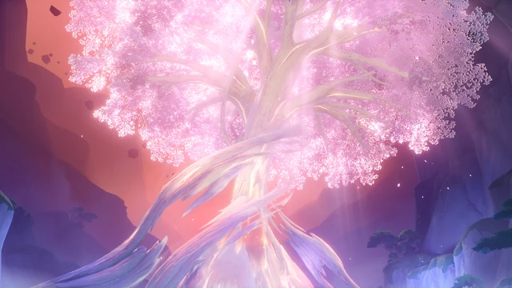

Sumeru · Hidden Lore
Irminsul and the World’s Memories
Irminsul is linked to the Ley Lines and the memories recorded across Teyvat. Sumeru’s Archon Quest and later story developments show that changing those records has wide consequences for people and history.

The Silver Tree at the Heart of the World
Deep within the subterranean roots of Teyvat lies Irminsul, the colossal, glowing silver-white world tree whose roots stretch across the entire continent, connecting every Ley Line, domain, and elemental vein in existence. Irminsul is not merely a botanical entity; it is the living neurological system and information database of Teyvat, recording every word spoken, every tear shed, every life lived, and every historical event that has ever occurred on the planet.
Whenever a mortal dies or an ancient god falls, their elemental energy and memories dissolve into the Ley Lines, gradually flowing back to the roots of Irminsul. Deities possessing deep resonance with the tree—such as the Dendro Archons Greater Lord Rukkhadevata and Lesser Lord Kusanali—can access its branches to consult past history, cure ecological blight, or speak through the minds of living beings.
The Danger of Forbidden Knowledge
Because Irminsul is the information substrate of Teyvat, it is uniquely vulnerable to alien contaminants from outside the world. The deadliest of these is 'Forbidden Knowledge'—chaotic, corruptive information originating from the dark void of the Abyss. Unlike ordinary poisons, Forbidden Knowledge cannot be metabolized by Teyvat's elemental ecosystem; when it infects Irminsul, it causes the roots to rot, spawning the Withering in forests, the agonizing plague Eleazar in humans, and severe madness in gods.
Twice in history, Sumeru faced annihilation from Forbidden Knowledge: first during King Deshret's catastrophic experiments, and second during the Cataclysm 500 years ago. In both instances, divine sacrifice was required to prune the contaminated branches and quarantine the infection.
Rewriting the Past: The Ultimate Memory Wipe
The most terrifying revelation regarding Irminsul was uncovered during the Sumeru Archon Quests: modifying a record in Irminsul does not merely alter historical books; it retroactively rewrites the conscious memories and recorded documents of every single person across Teyvat. Reality itself restructures its narrative to preserve causal continuity.
When Nahida erased Greater Lord Rukkhadevata from Irminsul, all texts, memories, and historical accounts across the seven nations changed in a single second: everyone believed Kusanali had been the sole Archon from the beginning. Similarly, when Scaramouche threw himself into Irminsul to erase his past sins, the world forgot the Balladeer, rewriting the tragedy of the Tatarasuna forge. However, because events cannot be undone—only forgotten—the physical consequences of the past remained intact.
The Descender Exemption
Crucially, there is one supreme exception to Irminsul's reality manipulation: Descenders. Because beings such as the Traveler originate from outside Teyvat, their consciousness and memories are not tied to Irminsul's Ley Line network. When Rukkhadevata was erased, the Traveler was the only person on the entire continent who still remembered her name, her sacrifice, and her love.
This makes the Traveler the ultimate 'Witness' of Teyvat: the sole living archive who preserves the real, unvarnished history of the world, untainted by celestial edits or memory wipes.
This is an original CoreGG reading guide, not an official HoYoverse article or a reproduction of the game text. Source links below identify the records used so you can check the original context.
Sources & references
Check these sources for the original game text and reference trail.